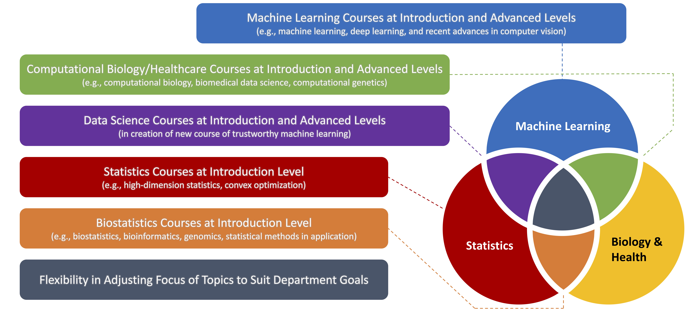

Haohan Wang's Application Package
A friendly reminder that highlights of these materials are presented in this page
please keep scrolling :D
(best viewed with tablet or devices with bigger screens)
CV Highlight
---------- Research Summary ----------
"Every progress the computational biology community makes can potentially free millions of people from suffering."
--this is said by a course instructor at CMU and has shaped my career trajectory.
| Vision: | Data-driven strategies to assist innovating therapies for human complex disorders | |
| Mission: | Develop trustworthy machine learning and AI tools assisting domain experts’ investigations | |
| Methods: | Trustworthy and robust deep learning, machine learning, high-dimension statistics, toolbox building | |
| Application Domains: | Alzheimer’s disease, substance use disorder, medical image processing |
---------- Main Recognitions ----------
| Sept 2019 | Next Generation: Rising Stars in Biomedicine by the Broad Institute | |
| for works dealing with confounding factors with deep learning | ||
| March 2021 | Youth Outstanding Paper Award by WAIC | |
| for paper “High-frequency Components Help Explain the Generalization of CNN” | ||
| Dec. 2018 | Most Influential Data Science Research Papers in 2018 by media in ODSC | |
| for technical report “on the origin of deep learning” |
For more information, please see my CV [link]

Research
---------- The Ecosystem and Competitive Advantages of Long-term Research ----------

---------- Specific Aims in Short-term (3-5 Years) ----------
| Aim 1: | Development of Trustworthy Deep Learning Methods to Phenotype Disorders from Complex-structured and Heterogeneous Data, Integrating Multiple Modalities | |
| Aim 2: | Development of Statistical Methods to Unveil Genetic Basis of Human Complex Traits at Personalized Level | |
| Aim 3: | Understanding Personalzied Genetic Basis of the Progression of Alzheimer's Disease with Developed Methods | |
---------- Potential Opportunities with Competitive Advantage and Domain Expert Support ----------
| PAR-19-269: | calls for novel machine learning methods to identify genetic variants of Alzheimer’s disease | |
| PAR-20-099: | calls for efforts to harmonize phenotypic data over multiple data modalities for Alzheimer’s disease | |
| PAR-21-255: | calls for innovative data-driven methods and software for the genomics study of human disease | |
| PA-21-219: | seeks to support exploratory and innovative research in neuroscience with novel methods | |
For more information, please see my Research Statement [link]
Teaching
---------- Previous Teaching Experience Highlight ----------
Guest lecture "An overview of Trustworthy Machine Learning" for CMU 10708 Probabilistic Graphical Models with Prof. Eric Xing [Link]
My blog associated with my guest lecture on "suppor vector machines" for Prof. Madhavi Ganapathiraju recently hit a milestone of 20,000 visits [Link]
My summary of the syllabus during TA service for CMU 11785 Deep Learning Lab with Prof. Bhiksha Raj now serves as a survey tutorial of the topic [Link]
---------- Potential Contributions to Future Teaching ----------
---------- Quote from A Research Mentee ----------
I feel myself lucky, to have you as my advisor. I really admired you because of your CV but you have bound me to admire you because of your heart(personality). I don’t know how I can thank you but you have my utmost gratitude. I will try to show it to you in my actions sir. You really are really a blessing for me.
For more information, please see my Teaching Statement [link]
Diversity and Inclusion Efforts
---------- Previous Contributions Highlights ----------
Trust Machine Learning Initiative
- I currently serve as one of the organizers
- We offer globally equal access to advanced trustworth machine learning materials through seminars and reading groups
- We offer diversity-balanced opportunities to the seminar speakers. Upto Nov. 2021, we have 26 speakers and 14 are female
- We held a symposium with Montreal AI Ethics Institute
Applicants.Club
- I was serving as the founding organizer in 2013-2015
- A platform aiming to globally offer underprevilidged applicants equal access to preparation materials for higher education application
- Research mentoring relationship globally across all ethnicities, races, and genders
---------- Plans for Future Contributions ----------
For more information, please see my Diversity Statement [link]
Software
Engineering and Entrepreneurship
---------- Robustar [link] ----------

Robustar aims to allow users to interact the image training data of machine learning models to annotate the potential spurious/confounding features and thus to improve the robustness of the models.
---------- GenAMap [link] ----------

GenAMap is a toolbox with graphical user interface that allows genetists and physicians with no machine learning experience to use variable selection tools to conduce genetic association studies.